遊戲內容
《黑暗靈魂3》是集系列作精華之大成 遊戲有著 不輸給一代的精采劇情 和 更勝二代的壯闊場景
然而 《黑暗靈魂3》的進化完全超越了前兩代作品 光是裝備的選擇 就足以讓玩家眼花撩亂
破百種武器 防具 戒指以及超大量的特殊道具 武器甚至還有15種變質
遊戲宣傳影片↓
故事劇情
遊戲時代設定於前身為一代的羅德蘭的洛斯里克王國 延續火之世代的初始之火歷經多個世代後再次衰弱 同時黑暗世代中死後復活的不死人也再次出現
一眾王者和英雄必須再次進行名為「 傳火 」的儀式 以自身靈魂重燃初始之火 才能把火之世代延續下去
在這世代中身負傳火責任的乃王國的王子洛斯里克，但他因厭倦不斷循環的世界而未有執行職責，過去成功傳火而死去的四位「 薪王 」因而被喚醒
但除了薪王魯道斯以外其餘三位薪王都放棄再次傳火 只憑魯道斯的力量不足以傳火 因此過去在傳火中失敗並死去的不死人「 無火餘灰 」被喚醒...
這代的故事一樣是走多線性 每個 NPC 除了都會帶有自己的故事之外 各個 NPC 之間的故事其實也環環相扣
同樣地 在這次的裝備介紹裡一樣隱藏了諸多內容 隨處可見過去《黑暗靈魂》的影子 更是讓老玩家起了懷舊之情
至於這代的故事精采程度和氣氛營造讓玩家很容易融入遊戲故事當中 不同選擇所造成的劇情、NPC 心境變化將深深烙印至玩家心中
遊戲具有多結局 視乎玩家選擇 主角可傳火以延續火之世代 讓初始之火熄滅使黑暗世代降臨 或奪取初始之火成為遊魂之王
遊戲目標及玩法
主角須出發擊敗三位薪王與洛斯里克王子並把各人的「 柴薪 」帶回王座 並擊敗過往所有參與傳火的薪王結合而成的集合體「 薪王們的化身 」
遊戲的地圖數量比前作少但面積更大和更細緻以鼓勵玩家進行探索
在遊戲的開始 職業的選擇並不是很重要 因為在後面你可以往任意的方向培養你的角色
意思是說 即使你開始用的是騎士 並不妨礙你提升智力屬性 專注於符咒的能力 (職業詳細說明)
玩家可使用一系列武器 包括短弓、火焰壺(類似炸彈的道具)、大劍、雙手劍等 以及使用盾牌格開敵攻擊以免受傷 敵人攻擊也能通過翻滾進行迴避
迴避範例↓

作為遊戲檢查點的「 篝火 」（Bonfires）也重臨
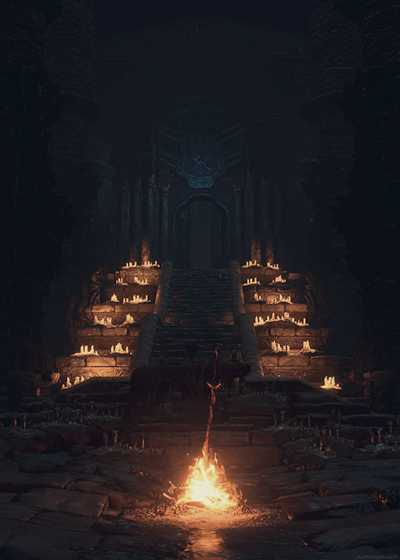
遊戲引進了名為「 戰技 」（Weapon Arts）的新元素 各武器和盾牌均可透過耗用 魔力值 發動其獨特能力

曾於《惡魔之魂》中採用的 魔力值 回歸 使用技能攻擊將耗用 魔力值 事後需使用「 原素灰瓶 」回復
技能分為3種: 魔法 咒術 信仰 每種類型都要根據該類型所需的點數去加點提升能力 (詳細點數說明)
「 原素灰瓶 」是遊戲中兩種元素瓶之一 能回復魔力值 另一是能回復生命值的普通「 原素瓶 」
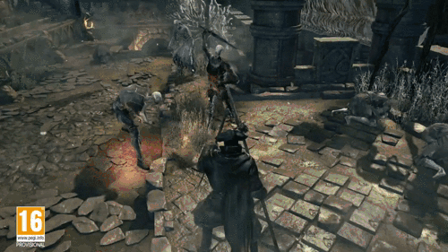 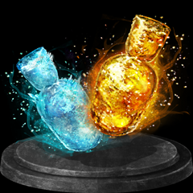
連線
這次遊戲一樣可以召喚隊友幫忙 特別的是在三代中 玩家總共可以召喚三名玩家或 NPC 來合作挑戰BOSS
當然被入侵 入侵其他玩家的 PvP 絕對是遊戲最精彩的部分之一
尤其考慮到這次遊戲中 誓約道具 大多需要連線來獲得 因此玩家更專注於合作以及入侵當中，讓彼此的互動比以往還更頻繁
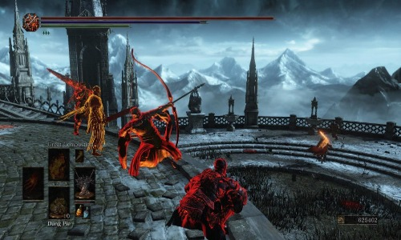 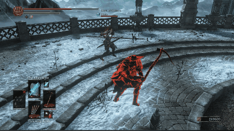
BOSS
《黑暗靈魂》系列中最精華之處 就是每一次的 BOSS 戰了
這代的 BOSS 戰與《Bloodborne》一樣 每隻 BOSS 都有著不同的階段性變化 而戰鬥時更注重思考
除了部分 BOSS 有著特殊的攻略法之外 由於大部分 BOSS 都有各自的屬性（甚至會在戰鬥中改變屬性） 玩家的防具選擇 武器附魔也至關重要
至於除了看攻略之外有什麼辦法可以得知如何擊殺 BOSS？簡單 用死亡來鋪開熟練的道路
 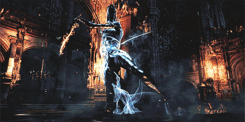
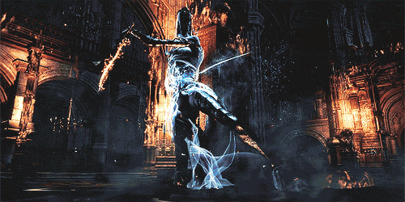
三位不願傳火的薪王分別為 保護王國免受深淵侵蝕的深淵監視者 無法抵滅罪業火焰的巨人尤姆 吞噬人類和神明的艾爾德利奇 以及 洛斯里克王子
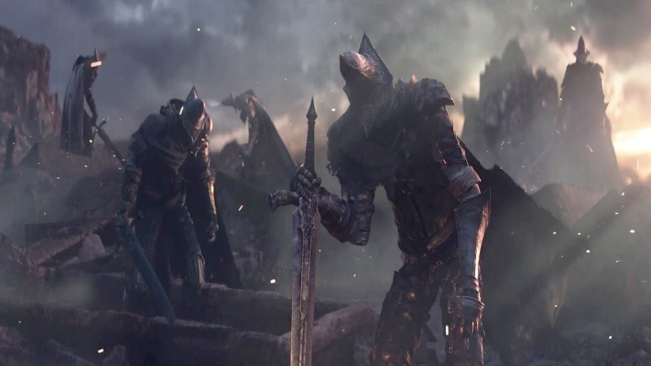 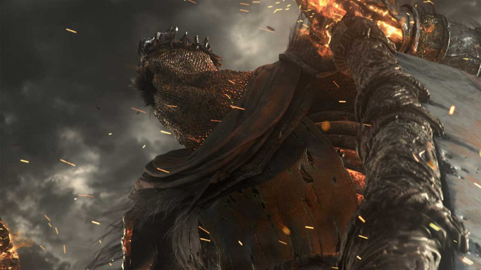 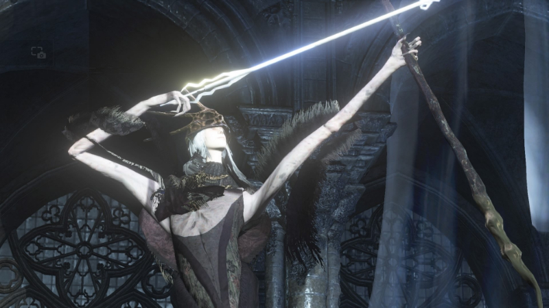 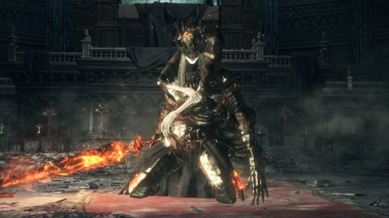
薪王們的化身↓
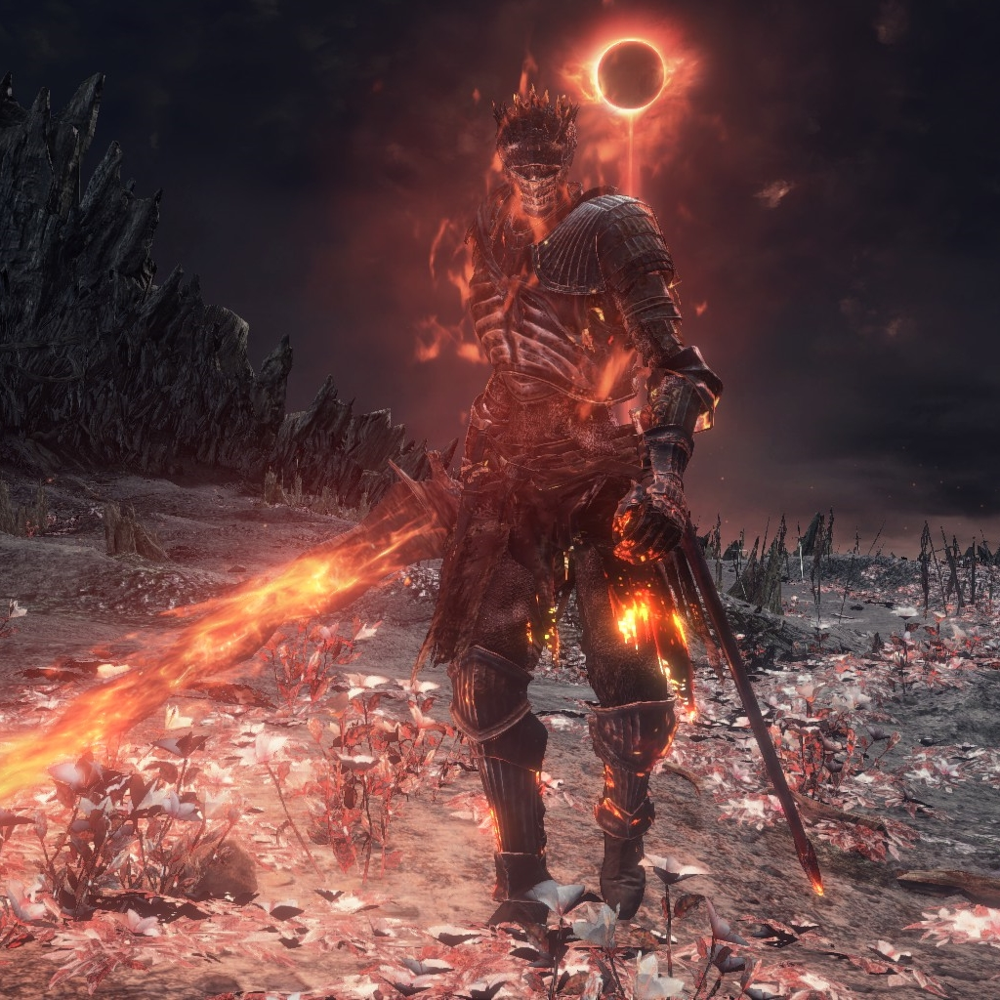
DLC
黑魂靈魂3有兩個主要的DLC 艾雷德爾之燼（Ashes of Ariandel） 和 環印城（The Ringed City）
艾雷德爾之燼↓
畫中的世界 一個充滿被現實世界所遺棄 無處容身者的避難所
由於艾雷德爾神父及身為灰燼之一的芙莉德修女不願改變畫中世界 世界正逐漸腐朽 負責重建畫中世界的人亦被禁錮
她的僕從因此離開了畫中世界到達洛斯里克尋求主角的協助 希望得到火焰重建畫中世界
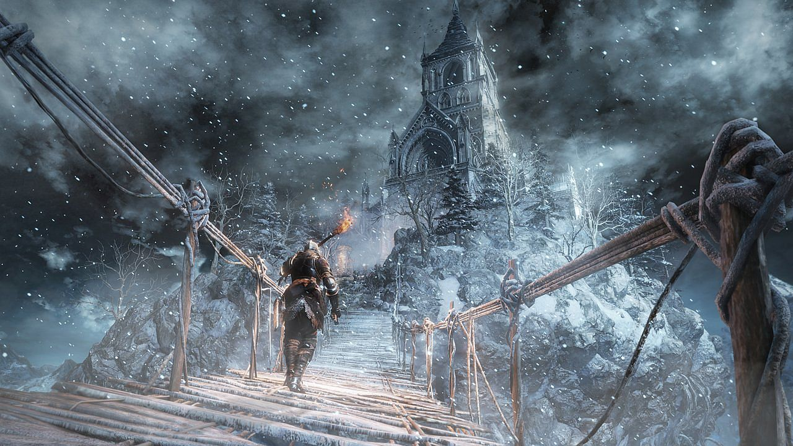
艾雷德爾之燼引進了一個新的地圖——艾雷德爾的繪畫世界
當玩家操縱主角到達幽邃教堂的淨身小教會時 會遇到了一個遊蕩的騎士—— 蓋爾
他會懇求主角進入繪畫世界 並實現一個預言 為「 艾雷德爾 」帶來「 火焰 」
繪畫世界的居民會各種各樣地請求灰燼按照預言點燃繪畫世界 或者坐視它慢慢腐爛
一位少女畫師告訴灰燼，「 蓋爾爺爺 」承諾找到她的染料來描繪一個新世界 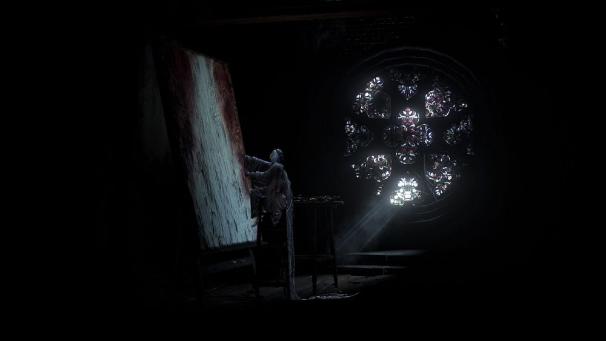
玩家的決定會觸發boss戰 最終艾雷德爾被點燃了 少女感謝玩家展示她的火焰並描繪她的新世界
為了與之前的DLC保持一致 艾雷德爾之燼不僅引入了一個實質性的新領域 還有兩個BOSS戰 還有若干新武器 法術和盔甲


艾雷德爾之燼DLC宣傳影片↓
環印城↓
《黑暗靈魂III：環印城》玩家初次接觸的兩個地區 聚集地 和 環印城 體現了自己的特色
前者是一片燃燒殆盡的城堡聚集區 包括了很多大教堂的遺址以及來自不同時代的廢墟 許多不同的覆滅文明的建築都被緩緩的擠壓在一起 慢慢腐朽
玩家將要努力躲避敵人發射出的大範圍的危險射線 這一切使得玩家被迫保持一種克制謹慎的前進步伐
環印城地區更加廣闊 一共有4個boss位於這個區域 被環形城牆包圍的城市裡有許多明亮的穹頂 花園 高大的建築以及廣闊的泛紫的沼澤地
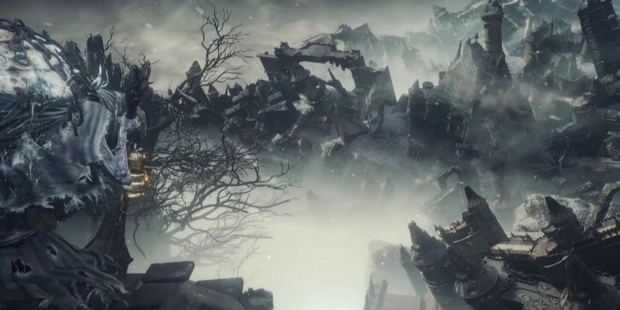 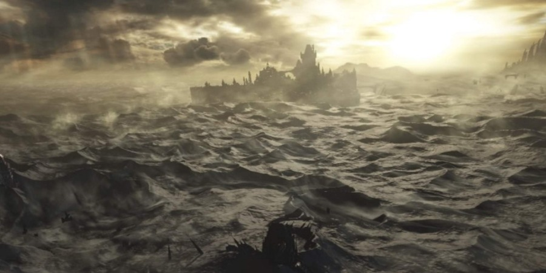
環印城的第一個Boss戰中，Boss將召喚其他玩家來與玩家進行戰鬥

環印城的最後一站，玩家將要和遊戲角色 蓋爾（Geal） 進行對戰，關於他的故事在前一個DLC《艾雷德爾之燼》中有所講述

環印城DLC宣傳影片↓